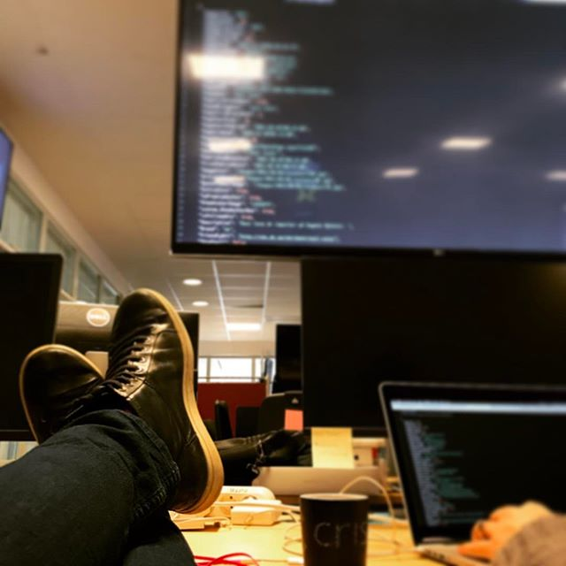
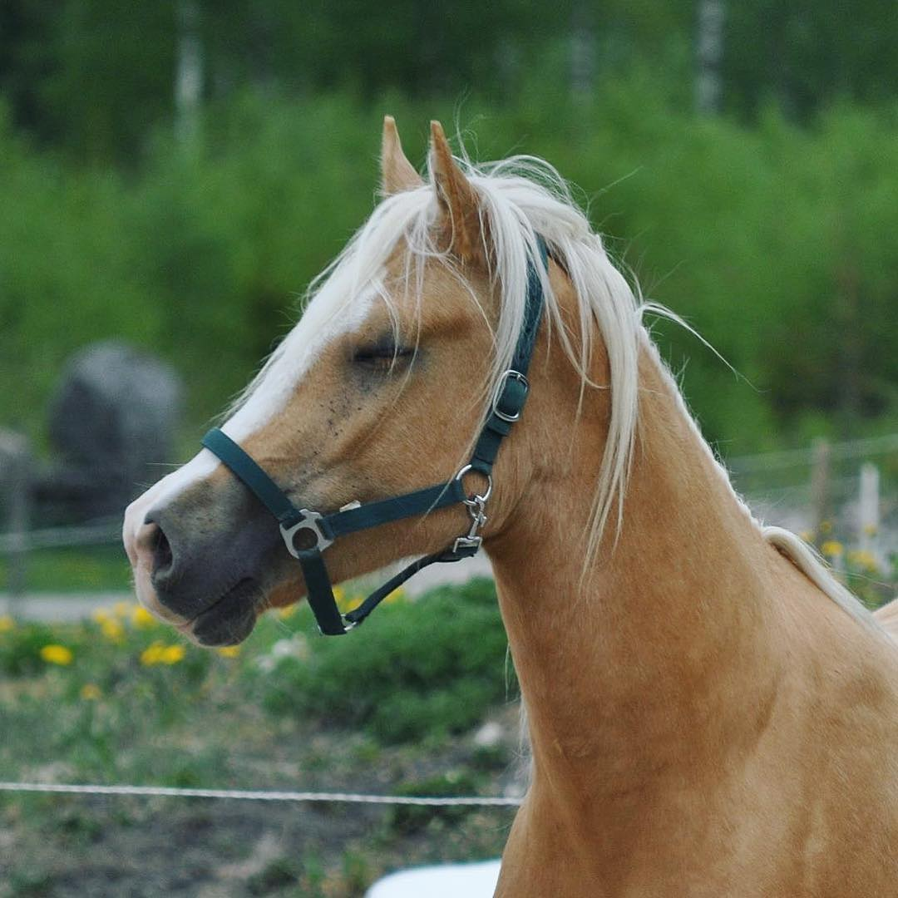
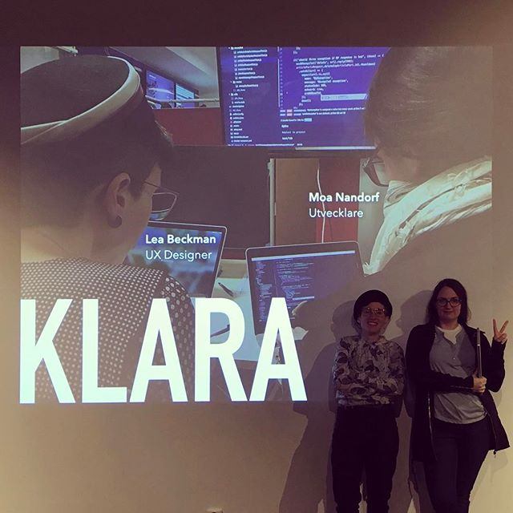

Välkomna!
Moa Nandorf
Full stack JavaScript developer
@ Bonnier News



Fredag
- HTML5 / CSS3
- Modulär CSS
- Designanalys
- Programmering?
Extras
- Sass/SCSS
- Mobile first
Lördag
- Grundläggande programmeringskoncept
- JavaScript
Extras
- functions
- let / const
- jQuery / React
Söndag
- JavaScript-repetition
- Enskilt arbete
Extras
- Progressive enhancement
Front-end?
HTML
<dog>
 </dog>
</dog>
<girl>
</girl>
<chair>
</chair>
<dog class="head terrier" id="blomma">
</dog>
<dog class="head spaniel" id="paprika">
</dog>
<dog class="head bulldog" id="morot">
</dog>
<dog class="body bulldog" id="fido">
</dog>
<img src="images/stock/lizzy.jpg" alt="Lizzy Bennet" class="portrait"/>
<h1>
Pride & Prejudice
</h1>
<p class="preamble">
It is a truth universally acknowledged, that a single man in possession of a good fortune, must be in want of a wife.
</p>
<p>
However little known the feelings or views of such a man may be on his first entering a neighbourhood, this truth is so well fixed in the minds of the surrounding families, that he is considered the rightful property of some one or other of their daughters.
</p>
Pride & Prejudice
It is a truth universally acknowledged, that a single man in possession of a good fortune, must be in want of a wife.
However little known the feelings or views of such a man may be on his first entering a neighbourhood, this truth is so well fixed in the minds of the surrounding families, that he is considered the rightful property of some one or other of their daughters.
<div>
<span>
<span>
<header>
<nav>
<main>
<article>
<aside>
<section>
<footer>
<nav>
<main>
<article>
<aside>
<section>
<footer>
...

- Cascading?
- Inheritance
- Specificity
- ( Box model )
div {
background-color: red;
}
.box {
background-color: green;
}
#wrapped-gift {
background-color: gold;
}
#wrapped-gift {
background-color: gold;
}
div {
background-color: red;
}
.box {
background-color: green;
}
Jayne
I'll be in my bunk.
Wash
Did he just go crazy and fall asleep?
.Card {
margin: 20px;
padding: 20px;
background: #eee;
box-shadow: 0 0 5px rgba(100,100,100,.5);
}
div > pp + pp:first-childp:nth-child()div:beforeochdiv:after
Box model
MDN intro till box model
Modulär CSS
Komponenter
is the shit!
.Intro {}
.Intro-description {}
.Intro-description--fancy {}
.Intro-description.is-hidden {}
.Intro-illustration {}